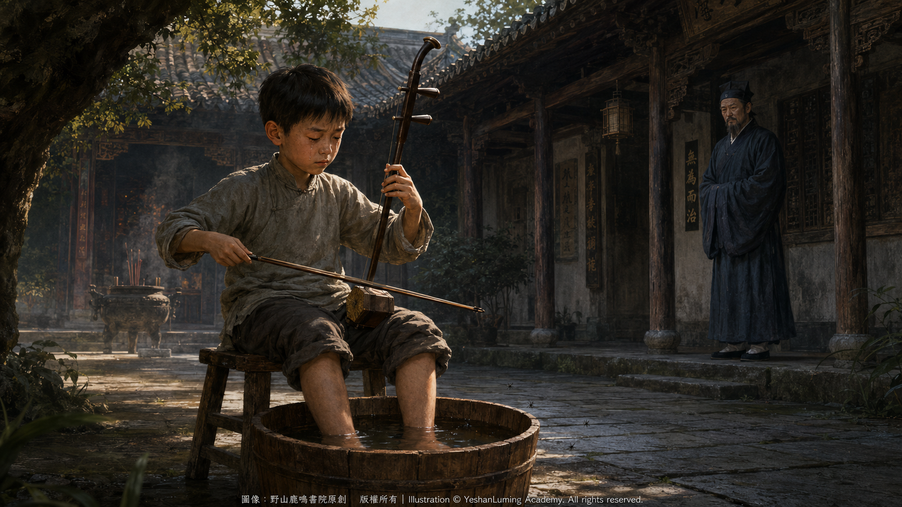

嚴師慈父·師徒相稱的荒誕A Stern Master, a Loving Father · The Absurdity of a Father and Son Calling Each Other Master and Disciple
China’s Beethoven · Blind Musician AbingA Stern Master, a Loving Father · The Absurdity of a Father and Son Calling Each Other Master and Disciple
China’s Beethoven · Blind Musician Abing嚴師慈父·師徒相稱的荒誕
中國的貝多芬·瞎子阿炳
中國的貝多芬·瞎子阿炳（103）China’s Beethoven · Blind Musician Abing (103)
阿炳的生母吳阿芬死後，華清和依然不敢公開承認阿炳是自己的親生兒子。他把阿炳寄養在鄉下親戚家，直到阿炳八歲那年，才把他接回雷尊殿，對外宣稱這是自己從鄉下收養的「小徒弟」。
阿炳就在這種極度扭曲的環境中長大：所有人都知道他是「野種」，真正的父親卻只能稱他為徒弟。華清和出於自身的自私、對名聲與地位的留戀，以及當時封建禮教和道門身份禁忌的壓力，一直隱瞞著自己與阿炳的真實關係。
直到1918年臨終前，他才含淚躺在病榻上，向二十五歲左右的阿炳坦白了自己刻意隱瞞二十多年的父子身世。
這段由封建禮教、世俗偏見與身份禁忌共同釀成的人間悲劇，成了阿炳一生中最敏感、也最痛苦的經歷，在他的心靈深處留下了難以癒合的創傷，並影響了他的一生。
華彥鈞與父親華清和之間的父子關係，是中國音樂史上最為隱晦、矛盾，也最令人動容、令人淚目的傳奇之一。
華清和身為無錫洞虛宮雷尊殿的當家道士，為了保護自己的名聲，在阿炳八歲、被接回身邊後，依然不敢與兒子公開相認，始終只能以「師徒」相稱，隱瞞親生骨肉的真實身世。
正因這種無法公開的私生子身世，以及阿炳的生母吳阿芬因世俗禮教逼迫而死的慘劇，華清和對兒子阿炳抱有極深的虧欠與愧疚。
阿炳的生母吳阿芬死後，華清和依然不敢公開承認阿炳是自己的親生兒子。他把阿炳寄養在鄉下親戚家，直到阿炳八歲那年，才把他接回雷尊殿，對外宣稱這是自己從鄉下收養的「小徒弟」。
阿炳就在這種極度扭曲的環境中長大：所有人都知道他是「野種」，真正的父親卻只能稱他為徒弟。華清和出於自身的自私、對名聲與地位的留戀，以及當時封建禮教和道門身份禁忌的壓力，一直隱瞞著自己與阿炳的真實關係。
直到1918年臨終前，他才含淚躺在病榻上，向二十五歲左右的阿炳坦白了自己刻意隱瞞二十多年的父子身世。
這段由封建禮教、世俗偏見與身份禁忌共同釀成的人間悲劇，成了阿炳一生中最敏感、也最痛苦的經歷，在他的心靈深處留下了難以癒合的創傷，並影響了他的一生。
華彥鈞與父親華清和之間的父子關係，是中國音樂史上最為隱晦、矛盾，也最令人動容、令人淚目的傳奇之一。
華清和身為無錫洞虛宮雷尊殿的當家道士，為了保護自己的名聲，在阿炳八歲、被接回身邊後，依然不敢與兒子公開相認，始終只能以「師徒」相稱，隱瞞親生骨肉的真實身世。
正因這種無法公開的私生子身世，以及阿炳的生母吳阿芬因世俗禮教逼迫而死的慘劇，華清和對兒子阿炳抱有極深的虧欠與愧疚。
因此，把兒子接到身邊撫養後，在教育和培養阿炳的過程中，華清和將「慈父」與「嚴師」兩種角色都扮演到了極致。他以一種帶有強烈補償意味、卻又近乎殘酷的教育方式，將阿炳鍛造成了一代音樂奇才。
華清和深知阿炳童年寄人籬下的清苦。把他接回道觀後，便盡其所能，給予阿炳當時所能得到的良好生活與教育。
他沒有把阿炳當作普通的道觀小童，僅僅讓他在道觀裡打掃、燒水和料理雜務，而是開始對他進行文化素養方面的全面培養。他送阿炳進私塾讀書，學習《三字經》《百家姓》以及四書五經等中國傳統文化典籍，並嚴格訓練他書寫毛筆字。
這使阿炳不僅精通音樂，也具備了相當的中國傳統文化底蘊，為他日後在街頭賣藝生涯中自編自唱「說唱新聞」，打下了必要的文字和文化基礎。 華清和深知，道士即使像他一樣成為雷尊殿的當家道士，社會地位依然不高；至於下層道士和音樂吹鼓手，更是經常受到世人的輕視。他不願意讓兒子重蹈自己的覆轍。
起初，他並不希望阿炳重走自己的老路。但當他發現阿炳對拉琴、吹笛、擊鼓展現出近乎執著的天賦與熱愛時，最終妥協了，決定將自己一身包括「鐵手琵琶」在內的音樂絕學，毫無保留地傳授給兒子。
在音樂技藝的傳授上，華清和收起了慈父的憐愛，扮演了一位真正的嚴師，對華彥鈞進行冬練三九、夏練三伏的嚴酷訓練。這時的他，是一位極其嚴厲、不容許阿炳有一絲懈怠的「師父」。
據後來流傳的說法，為了鍛鍊阿炳的指力、腕力和毅力，華清和設計了一系列近乎殘酷的訓練方法。那不僅是音樂技藝的訓練，也是在極端環境下對意志的磨煉。
冬天，他要求阿炳用冰塊摩擦雙手，然後彈奏冰冷的琵琶弦；夏天，阿炳在室外練習樂器，蚊蟲叮咬使他難以集中精神，華清和便讓他把雙腳泡在水桶裡，繼續在高溫與濕熱中苦練二胡。
練習笛子時，華清和要求阿炳站在無錫凜冽的寒風中迎風吹奏，以此鍛鍊唇部肌肉的力量和氣息的穩定。他還在笛子尾端掛上秤砣，以增強阿炳手腕的懸腕力量。
這對一個十歲左右的孩子來說，實在不是一件容易的事。每當阿炳感到難以承受、萌生退縮之意時，華清和就以師父的威嚴，要求他繼續堅持下去。
有時候，小阿炳一邊練習，一邊不斷流淚，華清和卻不肯降低要求，堅持讓他繼續練習。也許在無人看見的地方，這位不敢與兒子相認的父親同樣心如刀割；但是在阿炳面前，他絕不容許自己心軟。
阿炳後來震撼人心的二胡琴聲，與童年時期打下的基本功密不可分。據說，他使用的「老弦」比普通琴弦更粗，凝重有力的運弓方式也需要更強的指力和腕力。這些都是華清和從小按照極高標準對他進行嚴格訓練的結果。
在經年累月的高強度練習下，十幾歲的阿炳，手指曾無數次被琴弦磨破，鮮血染在琴弦上。傷口結痂後又再次磨破，週而復始，直到十指指尖都長滿厚厚的老繭，華清和才終於點頭，認可他算是「二胡入門了」。
華清和要求他的二胡琴聲必須具有極強的穿透力，要能在道觀法事的大鑼大鼓轟鳴中脫穎而出，達到「一聲刺透九霄」的境界。
在華清和這種兼具「父愛補償」與「嚴師雕琢」的雙重教育下，阿炳的音樂天賦被開發到了極致。

Click to enlarge
雖然有些訓練方法以今天的眼光來看近乎非人道，但華清和確實毫無保留地將自己的畢生絕學傳授給了阿炳。阿炳天資聰穎，加上長年累月的嚴格訓練，十五六歲時，已經成為無錫道教音樂界一名出色的樂師。
在一次大廟會上，少年阿炳領奏《普庵咒》，精湛的演奏令在場的鄉紳、香客和同行刮目相看。
到了十七八歲時，他已經熟練掌握了吹、拉、彈、唱等多種技藝。因為長相俊美、琴藝高超，他被無錫當地人譽為道教音樂界的「小天師」。
這種由嚴厲管教與血淚交織而成的童年訓練，雖然給阿炳留下了難以消除的心理陰影，但也正是華清和這種近乎殘忍的執著，塑造了後來名震天下的民間音樂大師。
在華清和去世前的幾年間， 阿炳已經是道觀內， 地位僅次於華清和的重要人物， 在道觀的各種活動中， 起到了至關重要的作用， 這讓華清和甚感欣慰。
然而，這段隱秘的父子關係，也埋下了日後悲劇的伏筆。
華清和一生以「師父」的身份面對兒子，內心同樣飽受煎熬。1918年，華清和病重。臨終前，他才老淚縱橫地向二十五歲左右的阿炳說出了隱瞞二十多年的真相：
「我是你的生父。」
身世真相的突然揭開與父親的離世，給正值盛年的阿炳帶來了巨大的精神打擊。那位對他最嚴厲的人，原來也是他的親生父親；然而就在父子終於能夠相認的時候，父親卻永遠離開了他。
失去了「嚴師」的管束與精神支柱後，阿炳一度在迷茫中放浪形骸，逐漸沉溺於吃喝嫖賭和吸食鴉片。後來，他又染上惡疾，眼疾日益嚴重，最終雙目失明，只能流落街頭賣藝謀生。
但是不可否認，正是華清和當年那套融合了深沉父愛、內心愧疚與極度嚴苛的教育，將一代音樂大師所需要的技藝、意志和感受力，深深地烙印在阿炳的血肉之中。
華清和沒有能夠公開做阿炳一天的父親，卻用「師父」的名義，把自己全部的音樂生命留給了兒子。
若沒有華清和，也許就不會有後來的阿炳；若沒有這段荒誕、痛苦而又深沉的父子關係，也許就不會有那首讓全世界為之動容的《二泉映月》。
（未完待續）
After the death of Abing’s biological mother, Wu Afen, Hua Qinghe still dared not publicly acknowledge Abing as his own son. He placed the boy in the care of relatives in the countryside. It was not until Abing was eight years old that he brought him back to Leizun Hall, telling the outside world that the child was a “young disciple” he had adopted from the countryside.
Abing grew up in this profoundly distorted environment: everyone knew that he was an “illegitimate child,” yet his real father could acknowledge him only as a disciple. Driven by his own selfishness, his attachment to reputation and status, and the pressures imposed by feudal ethics and the taboos surrounding his Taoist position, Hua Qinghe continued to conceal the true relationship between himself and Abing.
Only in 1918, as he lay dying, did he tearfully reveal to Abing—then around twenty-five years old—the father-and-son bond he had deliberately concealed for more than two decades.
This human tragedy, born of feudal morality, social prejudice, and the constraints of status, became one of the most painful and sensitive experiences of Abing’s life. It left a wound deep within his heart that could never fully heal and shaped the course of his entire life.
The relationship between Hua Yanjun and his father, Hua Qinghe, remains one of the most concealed and contradictory—and at the same time one of the most moving and heartbreaking—legends in the history of Chinese music.
As the Taoist priest in charge of Leizun Hall at Dongxu Temple in Wuxi, Hua Qinghe sought to protect his reputation. Even after bringing eight-year-old Abing back to live with him, he still dared not publicly acknowledge the boy as his son. They could only address each other as “master and disciple,” while the true identity of his own flesh and blood remained hidden.
After the death of Abing’s biological mother, Wu Afen, Hua Qinghe still dared not publicly acknowledge Abing as his own son. He placed the boy in the care of relatives in the countryside. It was not until Abing was eight years old that he brought him back to Leizun Hall, telling the outside world that the child was a “young disciple” he had adopted from the countryside.
Abing grew up in this profoundly distorted environment: everyone knew that he was an “illegitimate child,” yet his real father could acknowledge him only as a disciple. Driven by his own selfishness, his attachment to reputation and status, and the pressures imposed by feudal ethics and the taboos surrounding his Taoist position, Hua Qinghe continued to conceal the true relationship between himself and Abing.
Only in 1918, as he lay dying, did he tearfully reveal to Abing—then around twenty-five years old—the father-and-son bond he had deliberately concealed for more than two decades.
This human tragedy, born of feudal morality, social prejudice, and the constraints of status, became one of the most painful and sensitive experiences of Abing’s life. It left a wound deep within his heart that could never fully heal and shaped the course of his entire life.
The relationship between Hua Yanjun and his father, Hua Qinghe, remains one of the most concealed and contradictory—and at the same time one of the most moving and heartbreaking—legends in the history of Chinese music.
As the Taoist priest in charge of Leizun Hall at Dongxu Temple in Wuxi, Hua Qinghe sought to protect his reputation. Even after bringing eight-year-old Abing back to live with him, he still dared not publicly acknowledge the boy as his son. They could only address each other as “master and disciple,” while the true identity of his own flesh and blood remained hidden.
It was precisely because Abing was an illegitimate son who could never be openly acknowledged—and because his mother, Wu Afen, had died tragically under the persecution of society’s moral conventions—that Hua Qinghe carried an immense burden of guilt and remorse toward his son.
After bringing Abing into his home and assuming responsibility for his upbringing, Hua Qinghe therefore carried the roles of both “loving father” and “stern master” to their furthest extremes. Through a method of education driven by a powerful desire to compensate for the past, yet bordering on cruelty, he forged Abing into a musical genius.
Hua Qinghe knew how difficult Abing’s childhood had been while living under the roof of relatives. Once he brought the boy back to the Taoist temple, he did everything within his power to provide him with the best life and education available under the circumstances.
He did not treat Abing as an ordinary temple boy whose duties were limited to sweeping floors, heating water, and attending to miscellaneous chores. Instead, he began giving him a comprehensive cultural education. He sent Abing to a traditional private school, where he studied the Three Character Classic, the Hundred Family Surnames, the Four Books and Five Classics, and other canonical works of traditional Chinese culture. Hua Qinghe also trained him rigorously in Chinese brush calligraphy.
As a result, Abing not only became accomplished in music but also acquired a substantial grounding in traditional Chinese culture. This gave him the literary and cultural foundation he would later need to compose and perform his own “sung news stories” during his years as a street musician.
Hua Qinghe understood that even a Taoist priest who, like himself, had risen to become the head of Leizun Hall still held little social standing. Lower-ranking Taoist priests and ceremonial musicians were treated with even greater contempt. He did not want his son to repeat his own life.
At first, Hua Qinghe did not want Abing to follow the same path. But when he discovered the boy’s extraordinary talent and almost obsessive passion for string instruments, the flute, and percussion, he finally relented. He decided to pass on to his son, without reservation, the full range of his musical mastery—including the celebrated pipa technique that had earned him the name “Iron-Handed Pipa.”
In teaching music, Hua Qinghe put aside the tenderness of a loving father and assumed the role of a true master. He subjected Hua Yanjun to a punishing discipline—training through the coldest days of winter and the hottest days of summer. At such times, he was an uncompromising master who would tolerate not the slightest trace of laziness or neglect from Abing.
According to accounts passed down in later years, Hua Qinghe devised a series of nearly brutal exercises to strengthen Abing’s fingers and wrists and temper his perseverance. This was more than musical training; it was a trial of the will under extreme conditions.
In winter, he ordered Abing to rub his hands with blocks of ice and then play the freezing strings of the pipa. In summer, when mosquitoes tormented Abing as he practised outdoors and made it difficult for him to concentrate, Hua Qinghe had him immerse his feet in a bucket of water and continue practising the erhu amid the stifling heat and humidity.
When Abing practised the flute, Hua Qinghe made him stand facing the bitter winter winds of Wuxi and play directly into the gale, strengthening the muscles around his lips and developing steadiness of breath. He also suspended a scale weight from the end of the flute to build the strength required to hold the instrument firmly at the wrist.
For a child of around ten, none of this was easy. Whenever Abing felt that he could bear no more and began to lose heart, Hua Qinghe invoked the authority of a master and demanded that he persevere.
Sometimes the young Abing wept continuously as he practised, but Hua Qinghe refused to lower his demands and insisted that he continue. Perhaps, where no one could see him, the father who dared not acknowledge his own son felt as though a blade were cutting through his heart. But in Abing’s presence, he would never permit himself to yield to tenderness.
The profoundly moving power of Abing’s later erhu playing was inseparable from the foundation laid during those childhood years. It is said that the “old strings” he used were thicker than ordinary erhu strings, while his grave and powerful bowing technique required exceptional strength in both fingers and wrists. These were all results of the extraordinarily exacting standards Hua Qinghe had imposed upon him from childhood.
Through years of relentless, high-intensity practice, the teenage Abing had his fingers rubbed raw by the strings countless times, leaving blood upon them. The wounds would scab over, only to split open again. The cycle continued until thick calluses covered every fingertip. Only then did Hua Qinghe finally nod his approval and declare that Abing had at last “crossed the threshold of the erhu.”
Hua Qinghe demanded that his son’s erhu possess tremendous penetrating power. Its voice had to rise above the thunder of gongs and drums during Taoist ceremonies and attain the realm of “a single note piercing the highest heavens.”
Under this dual education—combining the compensating love of a father with the exacting craftsmanship of a stern master—Abing’s musical gifts were developed to their fullest extent.
Click to enlarge
Some of these methods may appear almost inhumane when judged by the standards of today. Yet Hua Qinghe unquestionably passed on the entirety of his lifelong musical knowledge to Abing without reservation. Gifted with exceptional intelligence and tempered by years of rigorous training, Abing had already become an outstanding musician in Wuxi’s Taoist musical circles by the age of fifteen or sixteen.
At a large temple fair, the young Abing led a performance of the Pu’an Mantra. His consummate playing astonished the local gentry, worshippers, and fellow musicians in attendance.
By the age of seventeen or eighteen, he had mastered a broad range of musical arts—wind instruments, bowed strings, plucked strings, and singing. Because of his handsome appearance and extraordinary musicianship, the people of Wuxi hailed him as the “Young Celestial Master” of Taoist music.
This childhood training, woven from stern discipline, blood, and tears, left psychological shadows that Abing would never completely escape. Yet it was also Hua Qinghe’s almost merciless determination that shaped the folk-music master who would one day become renowned throughout the world.
During the final years before Hua Qinghe’s death, Abing had already become the second most important figure in the temple after his father. He played an indispensable role in its ceremonies and other activities, bringing Hua Qinghe great comfort and satisfaction.
Yet this concealed bond between father and son also planted the seeds of the tragedy to come.
Throughout his life, Hua Qinghe had faced his son under the identity of a “master,” and he too suffered deeply within. In 1918, he became gravely ill. Only when death was approaching did he finally confess, with tears streaming from his aged eyes, the truth he had concealed from Abing for more than twenty years:
“I am your father.”
The sudden revelation of his identity, followed immediately by his father’s death, dealt an overwhelming emotional blow to Abing, then in the prime of his life. The man who had always treated him with the greatest severity had in fact been his own father. Yet at the very moment when father and son could finally acknowledge each other, his father left him forever.
Having lost both the discipline of his “stern master” and the spiritual pillar of his life, Abing drifted for a time into confusion and self-indulgence. He gradually became consumed by drinking, gambling, visits to brothels, and opium. Later, he contracted a serious illness, while the condition of his eyes steadily deteriorated. Eventually, he lost his sight completely and was forced to make his living as a street musician.
Yet it cannot be denied that Hua Qinghe’s method of education—an extraordinary fusion of profound paternal love, inner guilt, and extreme severity—engraved deep within Abing’s flesh and blood the technique, willpower, and emotional sensitivity required of a great musical master.
Hua Qinghe was never able to live openly as Abing’s father, even for a single day. Yet in the name of a “master,” he left the entirety of his musical life to his son.
Without Hua Qinghe, perhaps there would never have been the Abing the world later came to know. Without this absurd, painful, yet profoundly moving relationship between father and son, perhaps there would never have been the Moon Reflected on the Second Spring that has stirred the hearts of listeners around the world.
(To be continued)